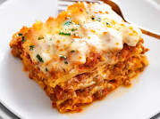

Lasagna

The Worlds Best Lasagna
This is the worlds best lasagna that will be a new family favorite! Homemade lasagna may have a few steps, but each step
is easy and I assure you it's worth your time. It's the perfect Italian meal!
Ingredients
- 1 pound lean ground beef
- 1 (32 ounce) jar pasta sauce
- 32 ounces cottage cheese
- 3 cups shredded mozzarella cheese
- 2 eggs
- 1/2 cup grated parmesan cheese
- 2 teaspoons dried parsley
- salt to taste
- ground black pepper to taste
- 9 lasagna noodles
- 1/2 cup of water
Directions
- Preheat oven to 350 degrees.
- Heat a large skillet over medium heat. Cook ground beef until brown and crumbly. Stir in pasta sauce.
- Combine mozzarella and 1/2 of parmesan cheese along with salt, parsley and pepper in a large bowl.
- Spread 3/4 cup of souce in a 9x13-inch baking dish. Cover with 3 uncooked lasagna noodles, 1 3/4 cups of cheese mixture, and 1/4 cup sauce; repeat layers once more.
- Top with remaining 3 noodles, sauce, mozzarella and parmesan cheese.
- Pour 1/2 cup of water along the edges of the dish and cover dish with aluminum foil.
- Bake in preaheated oven for 45 minutes. Uncover and bake for an additional 10 minutes.
- Let stand to cool for 10 minutes before serving.
Main Page